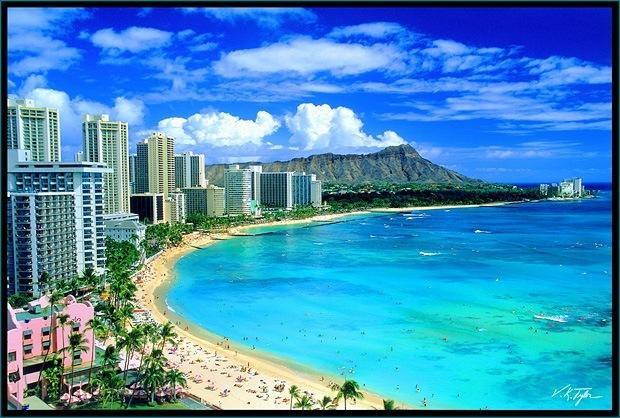
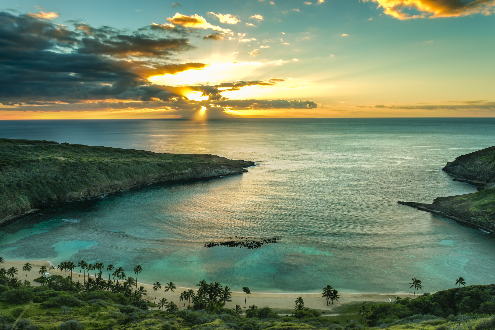
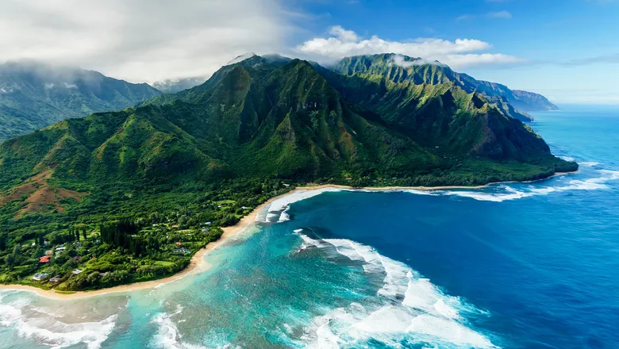
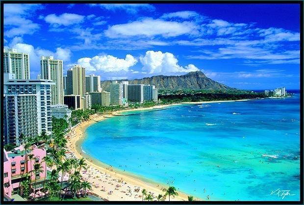
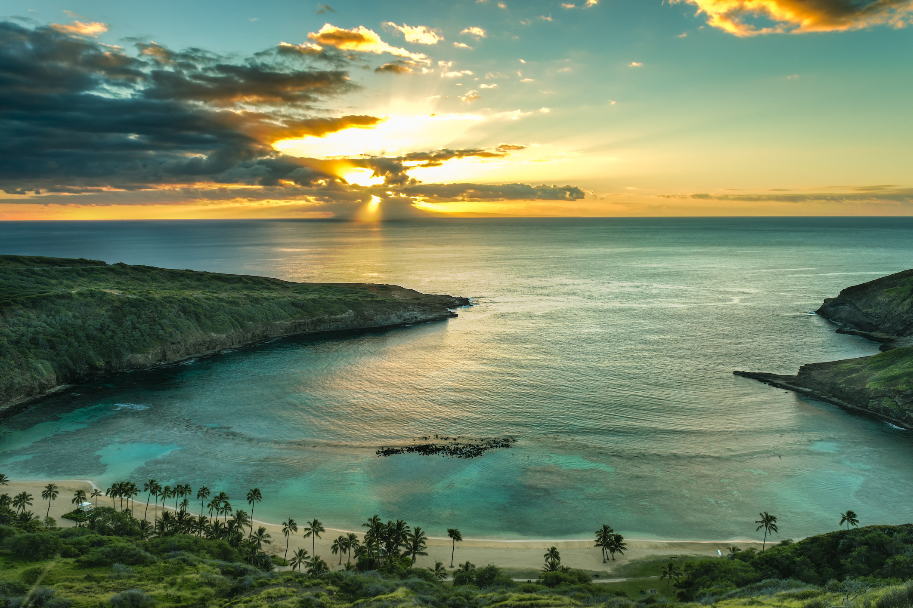
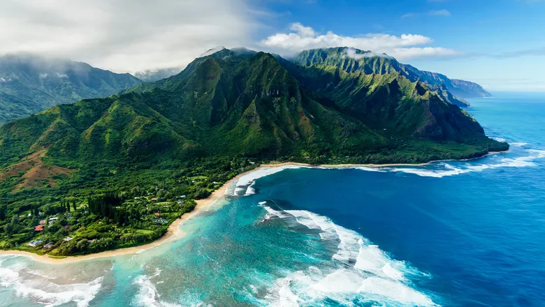

Maui is home to Haleakalā, the world’s largest dormant volcano. It rises over 10,000 feet above sea level, and visitors can watch spectacular sunrises and sunsets from its summit, which is also a national park.
The scenic Hana Highway is one of the most famous drives in the world, with 620 curves and 59 bridges. This 52-mile stretch takes travelers through lush rainforests, past waterfalls, and along rugged coastline.
Every winter, thousands of humpback whales migrate to the warm waters around Maui. It is one of the best places in the world for whale watching, with sightings often visible from shore or by boat tours.
Maui has a rich history in pineapple farming. The island was once the world's largest producer of pineapples, and today, visitors can tour the historic pineapple plantations and taste fresh pineapples.
Maui is known for its dramatic landscapes, from lush tropical rainforests to dry desert-like areas and volcanic craters. The island features diverse ecosystems that offer outdoor activities like hiking, snorkeling, and exploring hidden beaches.
 




